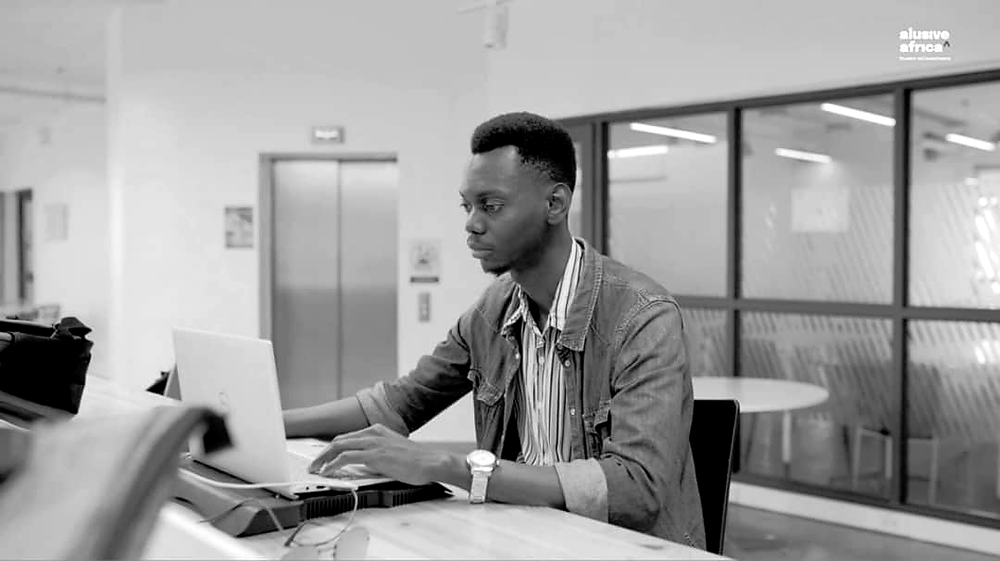

Program Coordination · EdTech · Youth Development
Program Coordinator & AI Product Builder · Kigali, Rwanda
Bridging education and technology to create meaningful learning experiences for learners — across program coordination, AI product development, and evidence-informed design.

About
I am a program coordination and EdTech professional based in Kigali, Rwanda, with roots in Freetown, Sierra Leone. My work sits at the intersection of learning design, operational systems, and digital tools — always in service of young people's pathways to dignified work.
At the Center for Re-Imagined Africa (CRA) within ALU, I coordinate fellowship programs end-to-end: managing cohorts, tracking learner engagement, synthesizing feedback, and maintaining the data infrastructure that keeps programs running well. Alongside this, I am the Founder and CEO of Student Companion AI — an AI-powered platform designed to provide seamless academic, administrative, and personal support to students across higher educational institutions in Rwanda and Africa.
I am a UN Millennium Fellow (Class of 2023), selected from over 44,000 global applicants — and an ALU alumnus with a Bachelor's in Entrepreneurial Leadership. I build at the intersection of education, technology, and impact.
"Building the systems through which Africa's next generation learns, grows, and leads."
Every program, tool, or system I build is evaluated by one question: does it actually help the learner?
Tracking dashboards, feedback loops, and evidence — not assumptions — drive the improvements I recommend.
Good intentions need good systems. I bring rigour to scheduling, documentation, and coordination.
Shaped by experience across Sierra Leone, Rwanda, and Togo, I bring a globally informed perspective to the challenges and opportunities unique to African education systems.
Experience
Leadership & Service
My Work and Experience
Capabilities
Education
Professional Development
Testimonial
Andrew brings a rare combination of operational discipline and genuine care for learners. His ability to manage complex, multi-stakeholder programs while keeping the human experience at the centre is something I have rarely seen in someone so early in their career. He is the kind of person who makes every program better just by being in the room.
Contact
Open to program coordination roles, EdTech collaborations, and AI product conversations. Based in Kigali — open to remote and relocation opportunities across Africa.